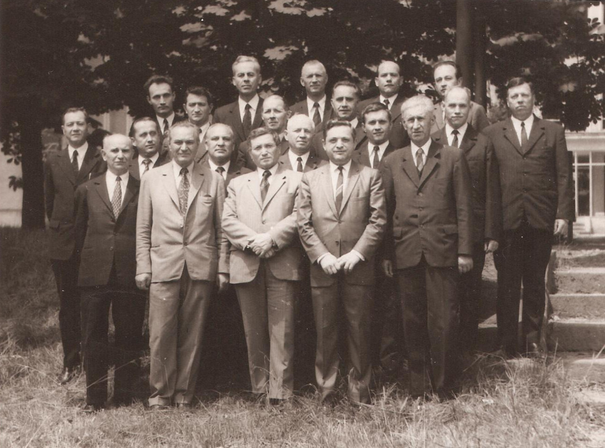

Istoric
Istoricul Bisericii Vestea Bună începe undeva în cartierul Pantelimon, în anul 1945, unde un grup de credincioși, condus de fratele Alexie Vamvu (pastor în perioada 1945-1951), care a cunoscut din Scripturi ce a făcut Dumnezeu pentru om și cum El dorește ca omul să răspundă chemării Sale, a îmbrățișat modul de închinare și de slujire pentru Dumnezeu, asemănător Bisericii Primare.
{kind=link}
Biserica ”Vestea Bună” de astăzi își are rădăcinile în butucul viței de vie plantat în bisericuța din strada Mărcuța, nr. 58, existență care nu poate fi despărțită de începuturile credinței penticostale în România. În ziua de 30 septembrie 1951 a avut loc prima adunare a bisericii în locașul din strada Popa Nan, nr. 106, marcând o perioadă binecuvântată de Dumnezeu pentru răspândirea cuvântului Său în București.
Activitatea bisericii, chiar dacă a urmat sub semnul unei libertăți religioase condiționate și controlată de o putere ateist-comunistă care avea ca scop final eliminarea credinței în Dumnezeu, a continuat având în fruntea ei frați precum Oprea Ioan (pastor în perioada 1956-1962) și Dumitru Matache (pastor în perioada 1962-1992).
Anul 1990 reprezintă momentul prielnic al dezvoltării lucrării lui Dumnezeu, libertatea propovăduirii Evangheliei fiind una reală, fără limitări din partea autorităților statului. Sub păstorirea fratelui Cristian Vasile Roske, în anul 1995, începe și construcția unei noi case de rugăciune pe același amplasament a celei existente, lucrare care se încheie la începutul anilor 2000, moment în care, la data de 16 ianuarie 2000, când are loc inaugurarea noii clădiri, biserica ce înainte era cunoscută după numele străzii, anume ”Popa Nan”, preia numele de ”Vestea Bună”, asumându-și toată istoria de la înființarea bisericii condusă de Alexie Vamvu, în 1945.
În contextul noii clădiri, activitatea bisericii s-a putut extinde, cuprinzând și alte activități specifice unei biserici creștine, permițând slujitorilor să se concentreze asupra calității lucrării bisericii la toate nivelurile (copii, tineri și adulți), lucru care a fost posibil și prin întărirea echipei pastorale căreia i s-au alăturat Emil Meștereagă (în anul 1998) și Ciprian Flavius Terinte (în anul 2001).
Istoria detaliată a Bisericii ”Vestea Bună” se regăsește în lucrarea ”Istoricul Bisericii Penticostale Vestea Bună”, 2009, Editura Pleroma, scrisă de Ion Manea, unul dintre pionierii bisericii.